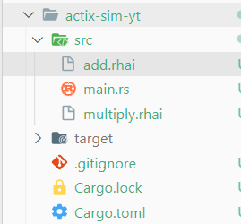
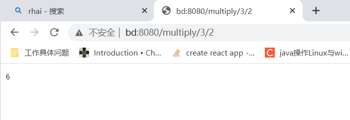

Actix Web, Rhai Script + Rust
cargo new actix-sim-yt
依赖
[dependencies]
actix-web = "4.0.1"
rhai = "1.6.1"
项目结构

rhai脚本
rust程序里使用rhai的engine来调用rhai脚本,实现某些操作
add.rhai
fn add(num1,num2){
return num1 + num2;
}
let num1 = num1();
let num2 = num2();
add(num1,num2);
multiply.rhai
fn multiply(num1,num2){
return num1 * num2;
}
let num1 = num1();
let num2 = num2();
multiply(num1,num2);
main.rs
use actix_web::{
HttpServer,
get,
App,
web::Path,
Responder
};
use rhai::Engine;
#[get("/multiply/{num1}/{num2}")]
async fn multiply(path: Path<(i64,i64)>)->impl Responder{
let (num1,num2) = path.into_inner();
let mut engine = Engine::new();
// 暴露变量给rhai
engine.register_fn("num1",move || num1);
engine.register_fn("num2",move || num2);
let res = engine.eval_file::<i64>("src/multiply.rhai".into()).unwrap();
format!("{res}")
}
#[get("/add/{num1}/{num2}")]
async fn add(path: Path<(i64,i64)>)->impl Responder{
let (num1,num2) = path.into_inner();
let mut engine = Engine::new();
// 暴露变量给rhai
engine.register_fn("num1",move || num1);
engine.register_fn("num2",move || num2);
let res = engine.eval_file::<i64>("src/add.rhai".into()).unwrap();
format!("{res}")
}
#[actix_web::main]
async fn main()->std::io::Result<()> {
HttpServer::new(|| {
App::new()
// 注册服务
.service(multiply)
.service(add)
})
.bind(("127.0.0.1",8080))
.unwrap()
.run()
.await
}
test

Extract Links
cargo new links-extrack
依赖
[dependencies]
error-chain = "0.12.4"
reqwest = "0.11.12"
select = "0.5.0"
tokio = { version = "1.21.2", features = ["full"] }
main.rs
use error_chain::error_chain;
use select::document::Document;
use select::predicate::Name;
// 错误处理
error_chain! {
foreign_links{
Reqerror(reqwest::Error);
IoError(std::io::Error);
}
}
#[tokio::main]
async fn main()->Result<()> {
let res=reqwest::get("http://www.rust-lang.org/zh-CN/")
.await?
.text() // 获取文本
.await?;
Document::from(res.as_str())
// 找到a标签
.find(Name("a"))
// 过滤得到带href属性的
.filter_map(|n| n.attr("href"))
.for_each(|x| println!("{}", x));
Ok(())
}